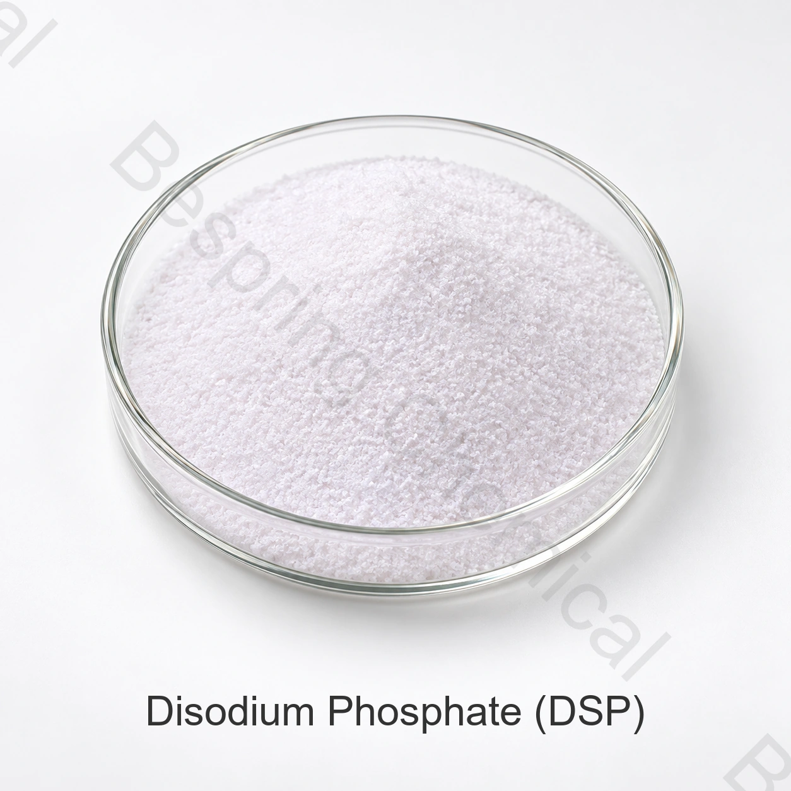

Puffer- und Säureregulierung
DSP kann helfen, den pH-Wert in kompatiblen Käse-, Getränke-, Gelee-, Milch- und Zutatensystemen zu bestimmen oder aufrechtzuerhalten.
Phosphat von Lebensmittelqualität · Natriumorthophosphat · INS 339(ii)
Dinatriumphosphat ist ein Natriumorthophosphat, das in ausgewählten Lebensmittelsystemen zur Pufferung, Säureregulierung, Emulgiersalzfunktionen und Wassermanagement verwendet wird.

Produktbild · Qualität und Verpackung bei Bestellung bestätigen
Produktprofil
Referenzanalyse≥98.0%
Standardpackung25-kg-Sack
Containerbeladung22 MT / 20' FCL
QualifikationCOA und Zertifikate auf Anfrage
Lebensmittelqualität Dinatriumphosphat (DSP), formal Dinatriumhydrogenphosphat, ist INS 339(ii), CAS 7558-79-4 entspricht wasserfreiem Na2HPO4; hydratisierte Formen erfordern eine separate Formel und Identitätsbestätigung.
Auf dieser Seite wird die gelieferte Handelsspezifikation von unabhängigen Identitätsangaben getrennt; die zulässige Verwendung, Dosierung und Dokumentation müssen für den Zielmarkt und die genaue Lebensmittelanwendung bestätigt werden.
Funktionale Rollen
Die Leistung hängt von Grad, Dosierung, Formulierung, Prozessbedingungen und geltenden Lebensmittelregeln ab.
DSP kann helfen, den pH-Wert in kompatiblen Käse-, Getränke-, Gelee-, Milch- und Zutatensystemen zu bestimmen oder aufrechtzuerhalten.
Die gelieferten Informationen identifizieren Wasserretention; bewerten Protein-Wechselwirkungen, Textur und Stabilität in der eigentlichen Formulierung.
Anwendungsbereiche
Dies sind Anwendungs-Prüfbereiche, keine universellen Genehmigungen oder garantierte Ergebnisse.
Kann in qualifizierten Emulgiersalzsystemen verwendet werden, um pH-Wert, Mineralhaushalt, Schmelze und Textur zu unterstützen.
Bewerten Sie Pufferung, Klarheit, Geschmack und Kompatibilität mit Kalzium, Proteinen und Säuren.
Prüfen Sie Säureregulierung, Gel-Wechselwirkung und Lagerstabilität in der kompletten Rezeptur.
Kann Pufferung und Wassermanagement nach Kompatibilitätsversuchen mit dem Milch- und Stabilisatorsystem unterstützen.
Bewerten Sie Wasserretention, Bindung und Ausbeute unter dem eigentlichen Salz-, Protein- und Wärmeprozess.
In den vorgelegten Informationen wird die Verwendung von Kultur angegeben; Gehalt, Nährstoffrolle und Prozessanforderungen werden bestätigt.
Angegebene technische Daten
Die nachstehenden Werte sind kommerzielle Referenzgrenzwerte, keine chargenbezogenen Analysenergebnisse oder allgemeingültigen gesetzlichen Grenzwerte.
Horizontal scrollen oder die Tastatur verwenden, um alle Spalten zu lesen
| Testobjekt | Einheit | Spezifikation |
|---|---|---|
| Dinatriumphosphatgehalt als wasserfreies Na2HPO4 | % | ≥98.0 |
| Arsen (As) | % | ≤0.0003 |
| Fluorid (F) | % | ≤0.003 |
| Schwermetalle (als Pb) | % | ≤0.001 |
| Wasserunlösliche Substanz | % | ≤0.2 |
| Blei (Pb) | % | ≤0.0004 |
| Trocknungsverlust, Na2HPO4 | % | ≤5.0 |
| Trocknungsverlust, Na2HPO4·2H2O | % | 18.0–22.0 |
| Trocknungsverlust, Na2HPO4·12H2O | % | 61.0 |
Hinweis zur Spezifikation: Na2HPO4 bezeichnet die wasserfreie Form, kein Monohydrat. Die Tabelle enthält getrennte Trocknungsverlustwerte für wasserfreies DSP, Dihydrat und Dodekahydrat; wählen Sie die zur bestellten Hydratform gehörende Spezifikation.
Qualifikationsunterstützung
Fordern Sie die aktuelle Spezifikation/TDS, SDS, Prüfmethoden und repräsentatives COA oder Charge.
Fordern Sie entsprechende HACCP-, Kosher-, Halal- und ISO-Dokumente an; überprüfen Sie Produkt, Standort, Umfang und Gültigkeit.
Überprüfung der Dinatriumhydrogenphosphat-Aufzeichnung der FAO/WHO für den Identitätskontext.
Lagerung und Handhabung
Fragen von Einkäufern
Dinatriumphosphat ist ein Natriumorthophosphat, das in ausgewählten Lebensmittelsystemen zur Pufferung, Säureregulierung, Emulgiersalzfunktionen und Wassermanagement verwendet wird.
Der Referenzgehalt beträgt ≥ 98,0 %. Für die Abnahme gelten die vereinbarte Spezifikation und das chargenbezogene COA.
Die Referenz ist 25 kg pro Beutel, 22 MT pro 20-Fuß-Container und eine Mindestbestellung von 500 kg.
Anforderung von Spezifikation/TDS, SDS, COA und entsprechenden HACCP-, Koscher-, Halal- und ISO-Dokumenten für die genaue Quelle.
Geben Sie Qualität oder Hydratationsform, Anwendung, Spezifikation, Menge, Verpackung, Zielort, Dokumente und Lieferdatum an.
Verwandte Lebensmittelphosphate
Überprüfen Sie Identität, Spezifikation, Anwendungen und Beschaffungsdetails für dieses verwandte Lebensmittelphosphat.
Überprüfen Sie Identität, Spezifikation, Anwendungen und Beschaffungsdetails für dieses verwandte Lebensmittelphosphat.
Überprüfen Sie Identität, Spezifikation, Anwendungen und Beschaffungsdetails für dieses verwandte Lebensmittelphosphat.
Lieferung nach vereinbarter Spezifikation
Anwendung, Spezifikation, Menge, Verpackung, Zielort und erforderliche Dokumente teilen.
Nennen Sie Qualität und Zielmarkt, damit wir verfügbare Dokumente für Ihren Auftrag bestätigen können.
Eine externe Referenz ist kein Chargenzertifikat und keine Bespring-Produktspezifikation.